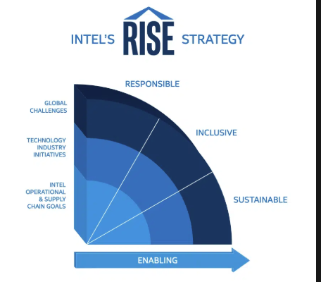
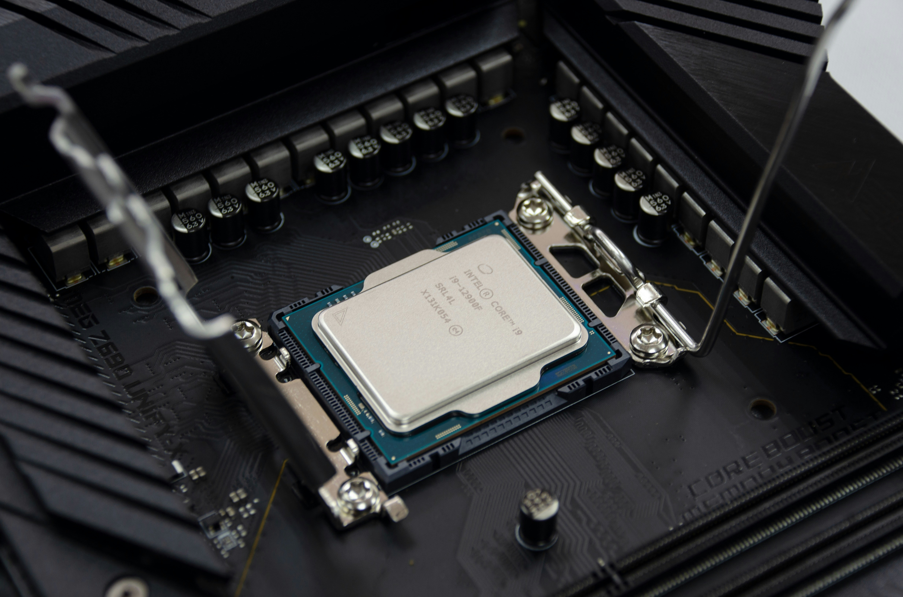
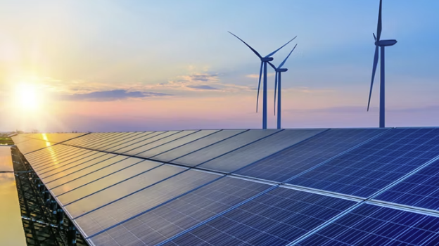
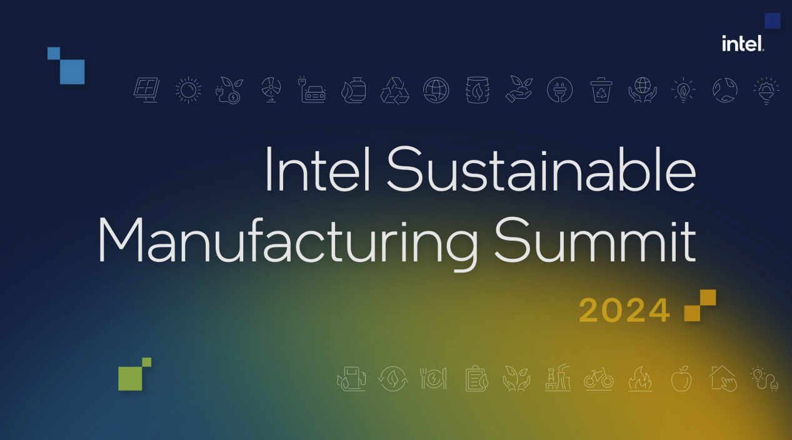

1968
Explore Intel's journey through time, discovering how our commitment to innovation has shaped a more sustainable future for technology and our planet.






Scroll to view timeline | Hover over cards to learn more!